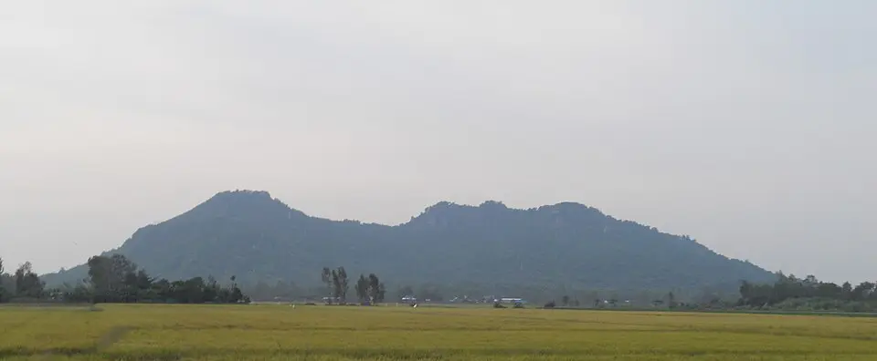
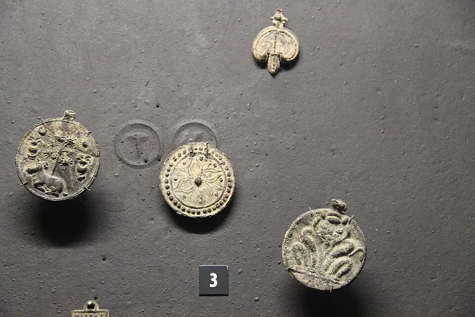
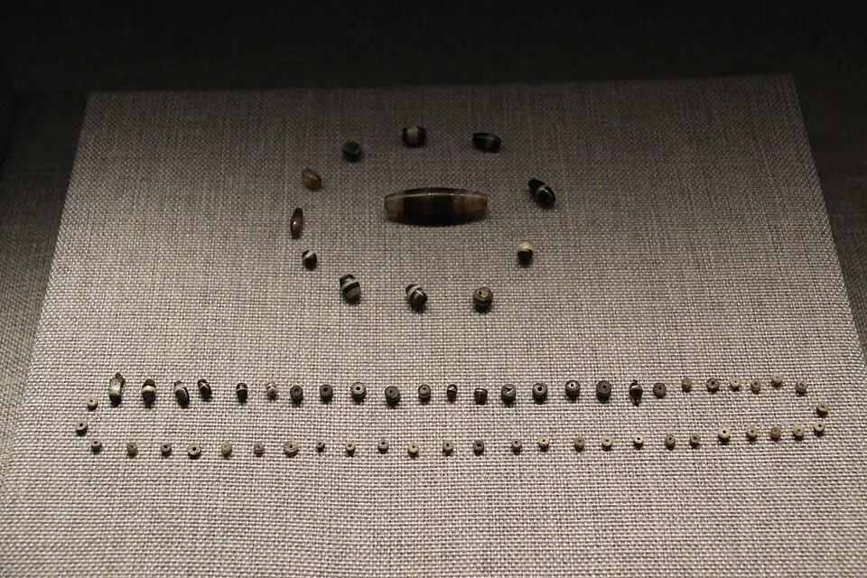
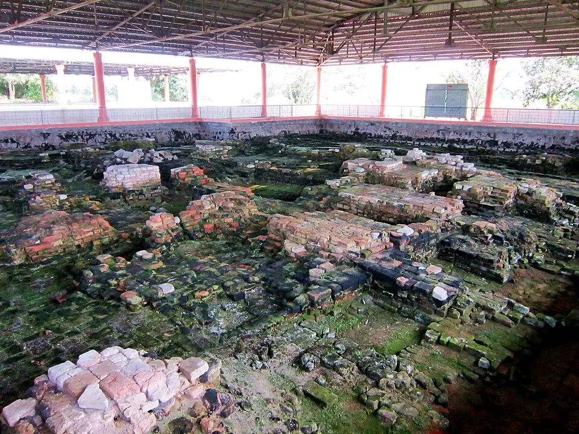

Óc Eo: đồng vàng La Mã dưới ruộng lúa An Giang
Năm 1944, giữa chiến tranh, một nhà khảo cổ Pháp đào những hố đầu tiên trên cánh đồng dưới chân núi Ba Thê. Ông tìm thấy một thị cảng đã mất, nơi có cả vàng mang tên hoàng đế La Mã Antoninus Pius.

Ngày 10 tháng 2 năm 1944, khi Đông Dương còn đang trong Thế chiến thứ hai, Louis Malleret của Trường Viễn Đông Bác Cổ cho đào những hố đầu tiên trên cánh đồng phía đông nam núi Ba Thê, An Giang. Ông đã khảo sát vùng này từ năm 1937 và nhìn thấy trên ảnh chụp từ máy bay dấu vết của kênh đào và một vòng thành. Cuộc đào kéo dài đến tháng 4. Trong số hiện vật thu được có những thứ không ai ngờ gặp ở một cánh đồng Nam Bộ: vàng mang chân dung và tên của hoàng đế La Mã Antoninus Pius.
Trong số hiện vật thu được có những thứ không ai ngờ gặp ở một cánh đồng Nam Bộ: vàng mang chân dung và tên của hoàng đế La Mã Antoninus Pius.
Thành phố dưới ruộng lúa
Malleret đặt tên cho nơi này theo một gò đất trên cánh đồng: Óc Eo. Khu di chỉ rộng khoảng 450 ha. Một con kênh chạy dọc giữa thành, bốn con kênh ngang chia thành phố thành từng khu, và nhà cửa có lẽ là nhà sàn dựng dọc theo kênh. Một kênh nối Óc Eo ra cảng biển. Một kênh khác chạy 68 km về phía bắc, đến Angkor Borei ở Campuchia ngày nay.
Trong các khu ấy, Malleret tìm thấy xưởng chế tác trang sức, có cả khuôn đúc và đồ trang sức thành phẩm. Ông còn tìm được tám đồng tiền bạc có hình chim thần hamsa, có vẻ do chính Phù Nam đúc. Những đồng tiền bạc kiểu này về sau được tìm thấy cả khi bị cắt đôi, cắt tư, cắt tám để làm tiền lẻ. Người ta chỉ cắt tiền khi buôn bán đã đủ nhiều để cần đến tiền lẻ.
Đồng vàng mang tên Antoninus


Antoninus Pius trị vì La Mã từ năm 138 đến 161. Ở Óc Eo, các nhà khảo cổ tìm thấy một mặt dây chuyền bằng vàng mô phỏng đồng aureus của ông, loại đúc khoảng năm 152, có dòng chữ ANTONINVS AVG PIVS và chân dung hoàng đế quay mặt sang trái. Có cả những món gắn với thời con nuôi và người kế vị của ông, Marcus Aurelius. Bên cạnh đó là những đĩa vàng mỏng do thợ địa phương làm, bắt chước tiền La Mã của Antoninus, Commodus và Septimius Severus.
Cùng với đồ La Mã còn có đồ vật từ Ấn Độ, Ba Tư và Hy Lạp. Một bài viết của Tạp chí Heritage kể thêm gương đồng thời Đông Hán, đồ vàng, thủy tinh và mã não có khắc chữ Brahmi. Óc Eo nằm giữa hai thế giới: phía tây là Ấn Độ Dương, phía đông là bờ biển dẫn lên Trung Hoa.
Có một sự trùng hợp mà các nhà sử học hay nhắc. Sử Trung Hoa chép rằng năm 166, một phái đoàn tự xưng là của vua Đại Tần (La Mã), tên là An Đôn, đến triều Hán qua ngả Giao Chỉ, tức miền bắc Việt Nam ngày nay. Cái tên An Đôn ứng với Antoninus, có thể là Antoninus Pius hoặc Marcus Aurelius Antoninus.
Phù Nam trong sử Trung Hoa


Cái tên Phù Nam không có trong bất kỳ văn bản nào do chính người dân ở đó viết. Nó chỉ có trong sử Trung Hoa, phần lớn dựa vào báo cáo của hai sứ thần nhà Ngô là Khang Thái và Chu Ứng, sang vùng này vào giữa thế kỷ 3. Họ tả một xứ có làng mạc có tường bao, cung điện, người dân nộp thuế bằng vàng, bạc, ngọc trai và hương liệu, và có cả sách vở, kho lưu trữ.
Lương thư còn chép một truyền thuyết lập quốc. Một người nước ngoài tên Hỗn Điền nằm mơ được thần trao cây cung, rồi lên thuyền buôn đến Phù Nam. Nữ vương Liễu Diệp định cướp thuyền, Hỗn Điền bắn một mũi tên xuyên qua thuyền bà. Bà hàng phục và lấy ông làm chồng. Đây là truyền thuyết, nhưng nó kể một điều có thật: Phù Nam là đất mà người lạ đến bằng đường biển.
Malleret tin Óc Eo chính là Kattigara, thương cảng ở tận cùng phía đông trong sách Địa lý của Ptolemy thế kỷ 2. Học giả Đức Albrecht Dihle cũng nghĩ vậy. Giả thuyết này hấp dẫn, nhưng đến nay chưa có văn bản nào ở Óc Eo ghi tên Kattigara.
Còn lại gì


Chiến tranh làm việc khảo cổ ở đây gián đoạn gần bốn mươi năm. Từ những năm 1980, các nhà khảo cổ Việt Nam trở lại, khai quật Gò Cây Thị, Gò Óc Eo, Nam Linh Sơn Tự và nhiều gò khác. Năm 2023, người ta tìm thấy ở Óc Eo một phiến đá cỡ cái đe, là dấu vết chế biến gia vị sớm nhất từng biết ở Đông Nam Á. Ngày 27 tháng 9 năm 2012, khu di tích Óc Eo và Ba Thê được xếp hạng di tích quốc gia đặc biệt, rộng khoảng 433 ha.
Không phải ai cũng đồng ý về cách gọi tên. Nhà sử học Hà Văn Tấn cho rằng chưa chứng minh được có một "văn hóa Phù Nam" trải rộng từ châu thổ Mê Kông đến Miến Điện, và đồ vật giống nhau ở các nơi có thể chỉ là kết quả của buôn bán. Dù gọi là gì, ruộng lúa Óc Eo vẫn giữ một sự thật khó cãi: gần hai nghìn năm trước, vàng mang tên một hoàng đế La Mã đã đến được bờ vịnh Thái Lan.